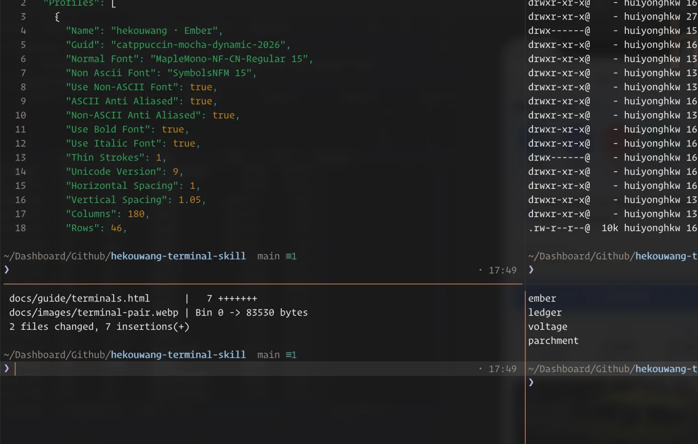

CLI & scriptsCLI 与脚本
Not a name list — every lite script below has the full command path: flags, what it touches, and how to undo.不是名单 —— 下面每个开源脚本都写出完整操作路径：参数、会动什么、怎么撤回。

bat, eza, delta, fzf and the tmux status bar, in four tmux panes. The VS Code theme ships in the paid pack; no VS Code app on this machine, so it is not in the shot.同一份 ember 色板：bat、eza、delta、fzf 与 tmux 状态栏，四个 pane 同屏。VS Code 主题随付费包提供；本机未装 VS Code 应用，所以未纳入截图。Run everything from the repo directory after cd hekouwang-terminal-lite-skill. Shared flags: --lang en|zh (remembered). Prefer --dry-run / --check before the first real run.进入仓库目录后再跑：cd hekouwang-terminal-lite-skill。共用参数：--lang en|zh（会记住）。第一次真跑前优先 --dry-run / --check。
install · migrate · theme · node-mgr · doctor · uninstall · update · sync · setup-gui · unlock · paid · manual · semantic
install.sh free
One-shot install. Idempotent — safe to re-run; skips what is already there. Backs up ~/.zshrc into ~/.hekouwang-terminal-backups/ before overwrite.一键安装。幂等 —— 重复执行安全，已装的跳过。覆盖 ~/.zshrc 前会备份进 ~/.hekouwang-terminal-backups/。
# 1) Preview — lists files and settings; changes nothing1) 预演 —— 列出要动的文件与设置，一个字节都不改 $ ./scripts/install.sh --dry-run # 2) Install2) 安装 $ ./scripts/install.sh # 3) Optional: pin language / Node manager (remembered)3) 可选：钉住语言 / Node 管理器（会记住） $ ./scripts/install.sh --lang zh $ ./scripts/install.sh --node fnm # fnm | nvm | brew | vfox # 4) China network: TUNA mirrors end-to-end4) 国内网络：全程清华等镜像 $ CN=1 ./scripts/install.sh
~/.zshrc? Run ./scripts/migrate.sh first — it moves your aliases / PATH into ~/.zshrc.local instead of wiping them.已经有用了很久的 ~/.zshrc？先跑 ./scripts/migrate.sh —— 把 alias / PATH 搬进 ~/.zshrc.local，而不是直接盖掉。
Changed your mind: ./scripts/uninstall.sh. Narrative guide: Install.后悔了：./scripts/uninstall.sh。叙事指南：安装。
migrate.sh free
Adopt an existing ~/.zshrc instead of overwriting it. Picks out lines that are uniquely yours into ~/.zshrc.local; drops lines the template will recreate (omz / starship / fzf init, …). Conservative: when unsure, treats a line as yours.接管已有 ~/.zshrc，而不是覆盖。把「只有你才有」的行搬进 ~/.zshrc.local；丢掉模板会重建的行（omz / starship / fzf init …）。判定保守：拿不准一律算「你的」。
# 1) Report only — decide after reading1) 只看报告，读完再决定 $ ./scripts/migrate.sh # 2) Apply (still backs up first)2) 执行（仍然先备份） $ ./scripts/migrate.sh --apply # 3) Then install as usual3) 再照常安装 $ ./scripts/install.sh
theme.sh free
Switch theme / gallery / follow-system. Lite syncs iTerm2 (3 community palettes). Walking the same palette out to Ghostty / Warp / cmux / Tabby / Terminal.app / bat / fzf / eza / delta / tmux / VS Code is paid.换肤 / 画廊 / 跟随系统。Lite 版只同步 iTerm2（3 套社区配色）。同一份色板走到 Ghostty / Warp / cmux / Tabby / 自带终端 / bat / fzf / eza / delta / tmux / VS Code 属 paid。
Lite syncs iTerm2. Fuzzy pick with live ANSI preview when fzf is installed:Lite 版同步 iTerm2。装了 fzf 时可模糊选 + 真彩色预览：

# Fuzzy pick + ANSI preview pane (needs fzf); else gallery有 fzf：模糊选 + 右侧 ANSI 预览；否则画廊 $ ./scripts/theme.sh $ ./scripts/theme.sh --pick # force fzf强制 fzf $ ./scripts/theme.sh --list # gallery only只要画廊 # Switch (lite examples)切换（Lite 版示例） $ ./scripts/theme.sh tokyo-night $ ./scripts/theme.sh catppuccin-mocha $ ./scripts/theme.sh ember # brand themes → paid品牌主题 → 付费 $ ./scripts/theme.sh --plan ember # read-only managed-file plan只读查看管理范围 $ ./scripts/theme.sh --rollback # restore latest snapshot恢复最近快照 $ ./scripts/theme.sh --history # list five retained snapshots查看保留的五份快照 # Single-theme / all-theme ANSI preview blocks单套 / 全套 ANSI 整块预览 $ ./scripts/theme.sh --preview tokyo-night $ ./scripts/theme.sh --gallery # Follow system appearance (off by default)跟随系统深浅色（默认关） $ ./scripts/theme.sh --auto $ ./scripts/theme.sh --auto <dark> <light> $ ./scripts/theme.sh --auto off # After switch: open a new tab for Dynamic Profile rules换肤后：新开 tab，Dynamic Profile 规则才生效
./scripts/theme.sh <name> pins that theme and turns --auto off — so a dark pick is not yanked back by system light mode.手动 ./scripts/theme.sh <名> 会钉住该主题并关掉 --auto —— 避免配了黑色却被系统浅色顶回白色。
More: Themes & auto · Terminal coverage · gallery.另见：换肤与跟随 · 终端覆盖 · 画廊。
node-mgr.sh free
Pick exactly one Node manager for the machine. Mixing fnm / nvm / brew node / vfox fights over PATH. Choice lives under ~/.config/hekouwang-terminal/; ~/.zshrc sources only that one.整台机器只留一套 Node 管理器。混用 fnm / nvm / brew node / vfox 会 PATH 打架。选择写在 ~/.config/hekouwang-terminal/；~/.zshrc 只 source 那一份。
$ ./scripts/node-mgr.sh # show current看当前选了哪个 $ ./scripts/node-mgr.sh fnm # recommended default推荐默认 $ ./scripts/node-mgr.sh nvm $ ./scripts/node-mgr.sh brew # single Homebrew node, not a version managerHomebrew 单版本 node，不是版本管理器 $ ./scripts/node-mgr.sh vfox
Also set at install time: ./scripts/install.sh --node fnm. Guide: Node manager.安装时也能钉：./scripts/install.sh --node fnm。指南：Node 管理器。
doctor.sh free
Read-only self-check by default (exit 0 = all green, 1 = has ✗). Section 0 is the state dashboard.默认纯只读体检（退出码 0＝全过，1＝有 ✗）。第 0 节就是状态机仪表盘。
$ ./scripts/doctor.sh # full checklist + fix suggestions完整清单 + 修复建议 $ ./scripts/doctor.sh --status # dashboard only: theme / auto / node / optical / scene / semantic / Ghostty reload只看仪表盘：主题 / 跟随 / Node / 光学 / 场景 / 语义 / Ghostty 重载 $ ./scripts/doctor.sh --parity # source-palette acceptance report源色板一致性验收报告 $ ./scripts/doctor.sh --fix # ask fixes by group: Node / auto / optical / scene / reload / GUI / theme按组问修：Node / 跟随 / 光学 / 场景 / 重载 / GUI / 主题 $ ./scripts/doctor.sh --quiet # one-line verdict (for scripts)只输出结论行（给脚本调） $ ./scripts/doctor.sh --profile # also zprof the slowest startup pieces顺带 zprof 点名最慢的启动项
Guide: Doctor & uninstall.指南：体检与卸载。
uninstall.sh free
Pair with install. Restores ~/.zshrc from backup; GUI settings go back via defaults delete (real factory defaults). Does not remove Homebrew itself, oh-my-zsh, or your ~/.zshrc.local unless you explicitly opt in.与 install 成对。从备份还原 ~/.zshrc；GUI 用 defaults delete 回真正出厂默认。默认不卸 Homebrew 本体、oh-my-zsh、你的 ~/.zshrc.local（除非你显式勾）。
$ ./scripts/uninstall.sh --dry-run # identical checklist, zero writes清单与真跑相同，一个字节都不动 $ ./scripts/uninstall.sh # interactive; default = skill-owned items only交互式；默认只删本技能写入的内容 $ ./scripts/uninstall.sh --yes # no prompts; default tier (keeps brew packages & omz)不问；执行默认档（不卸 brew 包、不删 omz）
update.sh free
Pull latest → regenerate themes → redeploy the theme you are on. Does not touch ~/.zshrc.local or GUI tweaks you made yourself.拉更新 → 重新生成主题 → 重新部署当前主题。不碰 ~/.zshrc.local、不碰你自己改过的 GUI。
$ ./scripts/update.sh --check # is there a newer version? what changed?有没有新版本、更了什么？不动文件 $ ./scripts/update.sh # pull + regenerate + redeploy拉取 + 重生 + 重部署
sync.sh free
Drift check across machines / hand-edits: is what is deployed still what the repo says?多机 / 手改漂移检查：部署出去的配置和仓库里的还一致吗？
$ ./scripts/sync.sh # read-only drift report只读：哪儿漂了 $ ./scripts/sync.sh --pull # redeploy from repo; pull drift back按仓库重部署，把漂掉的对回来 $ ./scripts/sync.sh --export ~/Desktop/kit-pack # bundle whole tree for a second machine打包配置带到第二台 $ ./scripts/sync.sh --state-export ~/Desktop/hkw-state.json # export pinned state only (theme/auto/node/optical/scene/badge)只导出钉住状态 $ ./scripts/sync.sh --state-import ~/Desktop/hkw-state.json # restore pins on a new machine新机按 manifest 还原钉住状态
setup-gui.sh free
Writes iTerm2 GUI prefs that must land while iTerm2 is not running (Minimal theme, default profile, Shift+Enter, scrollbar hide, Cmd-click / Semantic History, …). install.sh usually calls this; re-run if doctor section 4 complains.写必须在 iTerm2 退出后才能落盘的 GUI 项（Minimal、默认 Profile、Shift+Enter、藏滚动条、Cmd-click / Semantic History …）。install.sh 通常会调；doctor 第 4 节告警时再补跑。
# Do NOT run this inside a live iTerm2 session — it will skip.不要在正开着的 iTerm2 里跑 —— 会直接跳过。 # A) Quit iTerm2 (Cmd+Q), open macOS Terminal.app, then:A) Cmd+Q 退出 iTerm2，打开「终端」App，再跑： $ cd /path/to/hekouwang-terminal-lite-skill $ ./scripts/setup-gui.sh # B) Or from Terminal.app only (never from iTerm2)B) 或只用「终端」App（别从 iTerm2 进） $ ./scripts/doctor.sh # re-check section 4 afterwards跑完再看第 4 节
unlock.sh free → paid zip
Lite entry that installs a paid zip onto this tree (checksum + unpack + regenerate + optional theme apply). No unlock codes — the zip is the Pro build.开源仓里的付费包入口：校验 → 解压进本树 → 重生主题 → 可选重新 apply。没有解锁码 —— zip 本身就是专业档。
$ ./scripts/unlock.sh ~/Downloads/hekouwang-terminal-skill-paid-*.zip --dry-run $ ./scripts/unlock.sh ~/Downloads/hekouwang-terminal-skill-paid-*.zip $ ./scripts/unlock.sh <zip> --no-apply # unpack + regenerate, skip theme redeploy解压重生，不重部署主题
$ ./scripts/unlock.sh --rollback $ ./scripts/unlock.sh <zip> --allow-downgrade
Buy / pay: landing page · feature map: Pro build.购买：落地页 · 能力对照：专业版。
Paid-only scripts仅付费包里的脚本 paid
These files are not in the public MIT tree. After unlock.sh (or a private clone) you get the engines. Below is the command surface so you know what you are buying — not a copy-paste cookbook of the paid internals.这些文件不在公开 MIT 树里。用 unlock.sh（或 private 仓）装上后才有引擎。下面是命令形态，方便你知道买到什么 —— 不是付费内部实现的可复制菜谱。
font.sh · Optical Calibration Engine终端光学校准引擎
$ ./scripts/font.sh $ ./scripts/font.sh status $ ./scripts/font.sh apply maple|operator|victor|jetbrains \ [--density compact|comfortable|present] [--theme <name>]
scene.sh · Scene Aesthetics Engine场景美学引擎
$ ./scripts/scene.sh $ ./scripts/scene.sh status $ ./scripts/scene.sh apply daily|focus|present|record|remote \ [--theme <name>] [--badge <text>|off] $ ./scripts/scene.sh badge [<text>|off]
workspace.sh · project tab colors项目标签色
$ ./scripts/workspace.sh add ~/code/my-project # After register: cd into the dir → tab color + badge name登记后：cd 进目录 → 标签页变色、右上角印项目名
palette.sh · derive a theme from one accent从一个品牌色推出整套主题
$ ./scripts/palette.sh --from '#e08a5f' --name my-theme \ [--light] [--preset 编辑|科技|数据|默认] [--dry-run]
import.sh · import Ghostty / other theme packs导入 Ghostty 等主题包
$ ./scripts/import.sh --list $ ./scripts/import.sh 'Catppuccin Frappe' $ ./scripts/import.sh --all-builtin
The full manual lives in the repository at docs/manual.md (Chinese: docs/manual.zh-CN.md) and is public. The paid package ships the same copy. The public site shows the paid command surface, not the paid implementation.完整手册在仓库 docs/manual.md（中文 docs/manual.zh-CN.md），公开可读；付费包内附同一份。公开站只展示付费命令形态，不含付费实现源码。
Cheat sheet & full manual速查卡与完整手册 paid
A one-page A4 print card ships in the paid pack; the long-form manual is public and covers advanced topics, FAQ and the file-level tier split.一页 A4 速查卡在付费包内；完整手册公开可读，覆盖进阶、FAQ 与文件级分档。
Not a script:不是脚本： Semantic Interaction Layer语义交互层
Ships inside the iTerm2 Dynamic Profile (same path as Triggers). After ./scripts/theme.sh …, open a new tab, then Cmd-click path:line / Git SHA / localhost:port.写在 iTerm2 Dynamic Profile 里（与 Triggers 同路）。./scripts/theme.sh … 之后新开 tab，再 Cmd-click 路径:行号 / Git SHA / localhost:端口。
Full page: Semantic layer. Status bit: ./scripts/doctor.sh --status → semantic.专页：语义交互层。状态位：./scripts/doctor.sh --status → semantic。
release.sh is for publishing OSS/pro trees — not an end-user daily tool. Skip unless you maintain this skill.release.sh 是发 OSS/付费树用的，不是日常用户工具。除非你在维护本技能，否则可忽略。